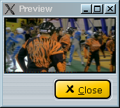

|
Vidéo: luminance et chrominance 1.Avant-propos Les filtres de cette famille jouent sur la luminance ou la chrominance. 2.Filtres de luminance/chrominance On constate parfois une inversion visible des plans de chrominances, par exemple avec une carte d'acquisition vidéo défectueuse. Ce filtre permet de les remettre dans le bon ordre. Par exemple, dans cette image u/v sont inversés :
En appliquant le filtre swap u/v, vous obtenez ceci, qui correspond à l'image correcte :  Ce filtre modifie de façon linéaire le contraste et la luminosité sur la luminance ou les valeurs u/v de chrominance. Il peut être utile pour corriger une vidéo trop claire, trop sombre, trop rouge ou trop bleue.
Ces filtres ne sont utiles qu'à des fins de débogage. Ils ne conservent qu'une seule composante (luminance/u/v). |